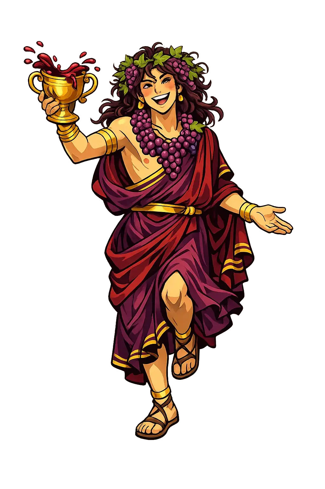

The Authentic Orthography
Wine, Ecstasy, Theatre · The Liberator · Twice-Born

Unicode restoration and ASCII comparison
Διόνυσος
The name in its original Greek form. Diónysos (Διόνυσος) is attested in the source tradition — “God of Nysa (mountain of ecstasy)”. Its acute accents carry the full phonetic and orthographic weight of the source tradition.
dionysos
Reduced to plain dionysos, the name loses everything that made it specific: acute accents. What remains is an ASCII string that machines can parse but that no longer speaks with its original voice.
Diónysos
The Unicode restoration recovers what ASCII flattened. Diónysos restores acute accents, returning the name to its original written dignity. The domain encodes to Punycode, but the browser displays the truth.
Diónysos.com → xn--dinysos-m0a.com
The non-ASCII characters in Diónysos are encoded while the ASCII remains visible. To the DNS, it is Punycode. To humanity, it is Diónysos.
How Diónysos travels from ancient script to the modern URL
Greek Διόνυσος; traditionally “god of Nysa", a mountain of ecstasy; the name is probably pre-Greek.
Wine, Ecstasy, Theatre
The Unicode restoration Diónysos preserves Greek stress and length; the ASCII form dionysos loses these features.
How Diónysos was spoken
Wine, Theatre, Rebirth
Diónysos is the god who arrives from outside. He comes with wine, with music, with the loss of the self that becomes discovery. He is the foreigner who is already inside you, the madness that heals, the drink that loosens tongues and boundaries alike. Where Apóllōn gives form, Diónysos dissolves it.
The gift of the vine — intoxication, liberation, and the blood of the god in the cup.
Tragedy and comedy were born in his festivals; the mask is his gift to civilization.
Fennel-rod tipped with pine cone — the wand of ecstatic procession and vegetative power.
His animal forms — the bull's strength and the leopard's untamed grace.
Stories of Diónysos
Diónysos is born twice, dies once, and comes back everywhere. His myths are stories of arrival — from the east, from the underworld, from the thigh of Zeus — and of the resistance he meets from those who fear losing control.
Semele, daughter of Cadmus, asked Zeus to reveal himself in his full divine glory. The sight killed her. Zeus snatched the unborn child from her womb and sewed it into his own thigh. Months later, Diónysos was born from Zeus's body — the "twice-born" god. (Homeric Hymn 1, Apollodorus 3.4.3.)
King Pentheus of Thebes refused to recognize the new god. He spied on the maenads and was torn limb from limb by his own mother and aunts, driven mad by Diónysos. Euripides' Bacchae makes the lesson explicit: the god punishes not disbelief, but hubris — the arrogance of thinking oneself separate from the divine.
In Orphic and Eleusinian tradition, Diónysos descends to the underworld to retrieve his mother Semele or his bride Ariadne, and returns with the secret of rebirth. The god who dissolves the self is also the one who restores it, transformed.
Hellenistic and Roman poets — especially Nonnus in the Dionysiaca — narrated Diónysos's triumphal campaign to India, converting peoples and spreading the vine. The "Thiasos" followed him: satyrs, maenads, panthers, and the old god Silenus.
Diónysos is the god you did not invite who becomes the reason the night is remembered. He is wine, but he is also everything that loosens the grip of the everyday self: music, dance, grief, laughter, the crowd becoming one body. His power is not in the temple but in the street, the theatre, the vineyard, the place where boundaries soften and something older than personality takes over.
Enter Extended Lore